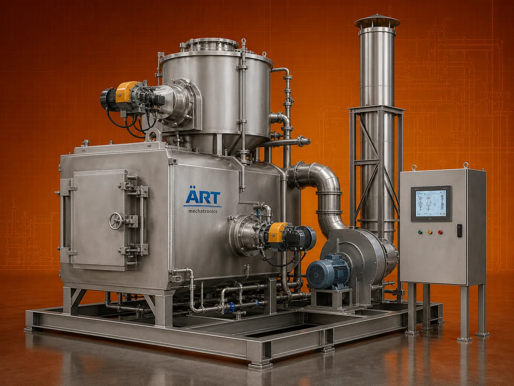

Incinerator Machine (Industrial Waste Incinerator for Safe & Controlled Waste Disposal)
An Incinerator Machine, also known as an Industrial Waste Incinerator or Waste Disposal Incinerator, is a specialized system designed to burn and safely dispose of solid, liquid, and hazardous waste materials at high temperatures.

About the Incinerator Machine
Incinerators convert waste into ash, flue gases, and heat energy, significantly reducing waste volume while ensuring safe, hygienic, and environmentally controlled disposal.
These systems are widely used in industries such as hospitals, pharmaceuticals, chemicals, municipal waste management, food processing, and manufacturing, where proper waste disposal and regulatory compliance are critical.
ART Mechatronics offers advanced incinerator machines, engineered for efficient combustion, emission control, and reliable industrial operation.
One machine, many names
Buyers search for this equipment under many terms — we manufacture all of them:
Working Principle of Incinerator Machine
Types of Incinerators
Industries Using Incinerator Machine
🏥 Healthcare & Hospitals
- Biomedical waste
💊 Pharmaceutical Industry
- Chemical waste
⚗️ Chemical Industry
- Hazardous waste
🏙️ Municipal Corporations
- Solid waste disposal
🏭 Manufacturing Industry
- Industrial waste
🍃 Food Processing Industry
- Organic waste
Features & Advantages
- Safe and hygienic waste disposal
- High-temperature efficient combustion
- Significant volume reduction
- Pollution control system integration
- Compliance with environmental norms
- Reduced landfill dependency
- Reliable and continuous operation
Technical Highlights
- Capacity: Custom (kg/hr to tons/day)
- Combustion Type: Multi-chamber system
- Fuel Type: Diesel / Gas / Dual fuel
- Temperature Range: High temperature operation
- Construction: Heavy-duty insulated structure
- Control System: Automatic / PLC-based
Turnkey Incineration Solutions
ART Mechatronics offers:
- Complete incinerator system design
- Combustion and pollution control integration
- Installation & commissioning
- Regulatory compliance support
- After-sales service & AMC
Why Choose Art Mechatronics
- Expertise in waste management systems
- Customized solutions for different waste types
- High-performance and durable equipment
- Environment-friendly designs
- Proven performance across industries
Applications
- Hospitals & Healthcare Facilities
- Pharmaceutical Plants
- Chemical Industries
- Municipal Waste Plants
- Industrial Manufacturing Units
Related Heating & Drying machines
Get pricing & specs for the Incinerator Machine
Share the product, target capacity, current process and plant location. These details help our engineers discuss the right machine or line configuration.
One partner, from design to start-up
ART Mechatronics designs, manufactures, installs and commissions your Incinerator Machine solution with regional presence in India, UAE and Thailand.